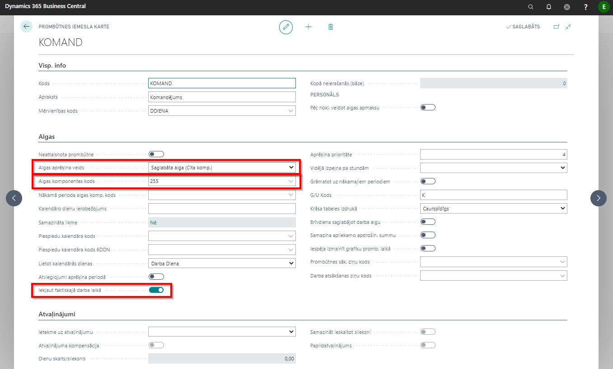
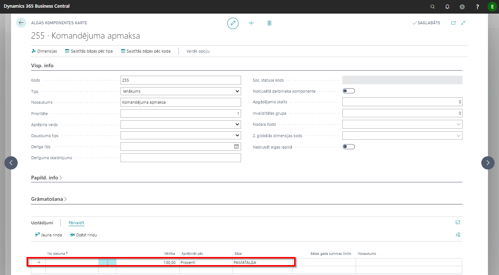
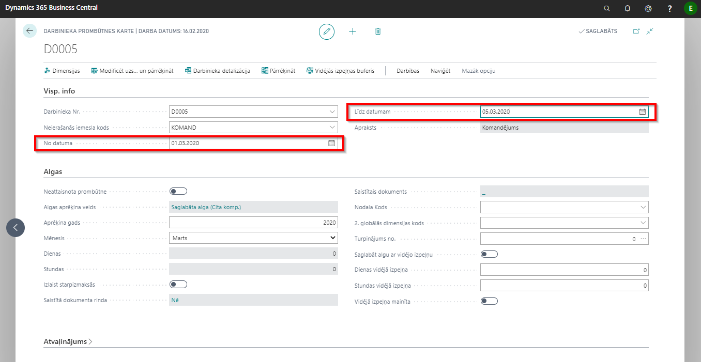
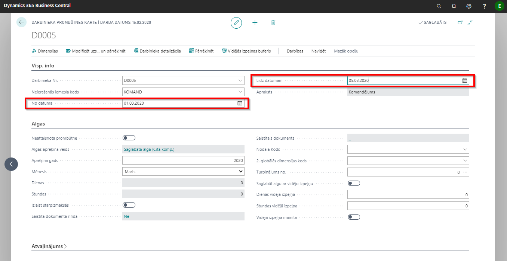
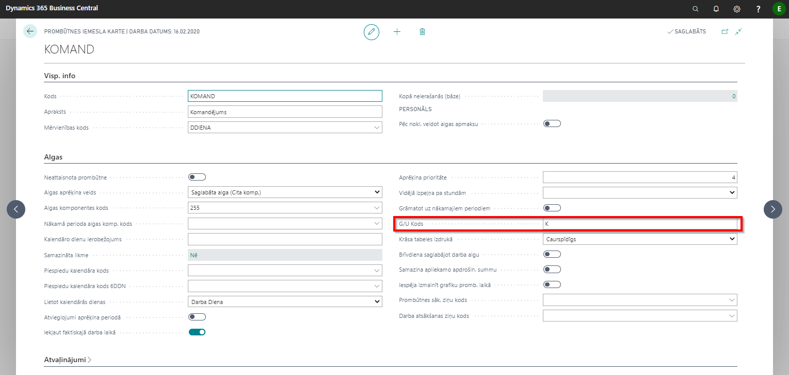
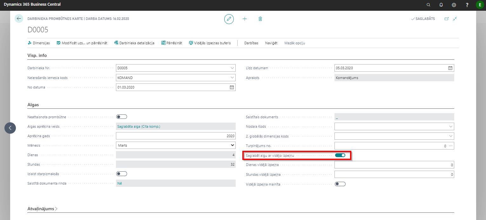

Komandējumi
Darba likuma 53. panta 4. daļa paredz: Darbiniekam, kas nosūtīts komandējumā vai darba braucienā, tā laikā saglabājas darba vieta (amats) un darba samaksa. Ja darbiniekam ir noteikta akorda alga, viņam izmaksā vidējo izpeļņu. Darba likuma 62. panta 2. daļa paredz: Laika algu aprēķina atbilstoši faktiski nostrādātajam darba laikam neatkarīgi no paveiktā darba daudzuma. Akorda algu aprēķina atbilstoši paveiktā darba daudzumam neatkarīgi no laika, kādā tas paveikts.
Lai par komandējuma dienām darbiniekam saglabātu darba algu, jārīkojas sekojoši:
Jāatver komandējumiem paredzētā prombūtnes iemesla karte ar kodu KOMAND: Lomu centrs - Prombūtnes - Prombūtnes iemesli 
Prombūtnes iemesla kartē jāizvēlas algas aprēķina veids – Saglabāta alga (cita komponente) vai Saglabāta alga (tad aprēķinātā alga par komandējuma dienām tiks aprēķināta uz pamatalgas komponenti);
Ja kā Algas aprēķina veids ir izvēlēts Saglabāta alga (Cita komponente), tad laukā Algas komponentes kods jānorāda algas komponente, uz kuru jāaprēķina alga par komandējuma dienām;
Jāieliek atzīmē laukā Iekļaut faktiskajā darba laikā;
Komandējuma apmaksai paredzētajā algas komponentes kartē ir jāaizpilda sadaļa Uzstādījumi 
Gadījumos, ja komandējums “pāriet” no viena mēneša uz nākamo, ieteicams komandējumu sadalīt un izveidot divas darbinieka prombūtnes kartes. Piemēram, ja komandējums ir par periodu no 25.02.20. līdz 05.03.20., tad
 
Šādi tiks nodrošināts korekts komandējuma naudas aprēķins gadījumos, kad komandējuma mēnešos ir atšķirīgs darba dienu skaits (ja darba alga tiek rēķināta proporcionāli nostrādātajām dienām). Ja nepieciešams visu komandējuma naudu izmaksāt kopā (nesagaidot nākošā mēneša algu aprēķina izmaksu) tad iespējams lietot Starpizmaksu (Lomu centrs - Starpizmaksu saraksti)

Šādi tiks nodrošināts korekts komandējuma naudas aprēķins gadījumos, kad komandējuma mēnešos ir atšķirīgs darba dienu skaits (ja darba alga tiek rēķināta proporcionāli nostrādātajām dienām). Ja nepieciešams visu komandējuma naudu izmaksāt kopā (nesagaidot nākošā mēneša algu aprēķina izmaksu) tad iespējams lietot Starpizmaksu (Lomu centrs - Starpizmaksu saraksti)Darbinieku prombūtnēs ievadītais komandējums uzskaitē tiks atspoguļots ar prombūtnes iemesla Komandējums (Nodaļas-Algas-Uzstādījumi-Prombūtnes iemesli) sadaļā Algas norādīto G/U Kodu. 
Lai par komandējuma dienām darbiniekam izmaksātu vidējo izpeļņu, darbinieka prombūtnes kartē jāizvēlas Saglabāt algu ar vidējo izpeļņu
